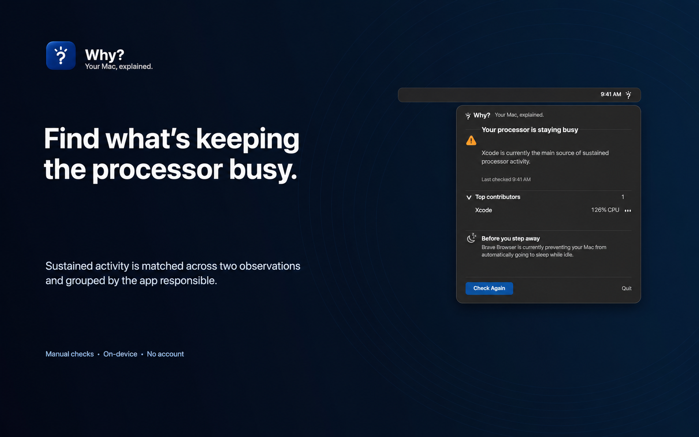

Find what is keeping your processor busy.
Why? looks for sustained activity across two observations, then identifies the strongest qualifying process or application.

A one-time check turns trusted macOS signals into a plain-English answer.
Manual checks On-device No account
Why? checks your Mac only when you ask. It doesn’t monitor continuously, and each check takes about five seconds.
Why? brings supported macOS signals together and presents the strongest explanation first.
Open it from the menu bar, ask for a check, and get a conclusion in about five seconds. Nothing runs continuously in the background.
Manual by design
Why? is open source under the MIT license. Explore the source on GitHub or build it yourself. The official signed download is still being prepared.